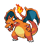
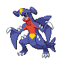
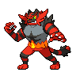
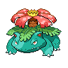
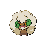

Ablation plan · Champions VGC 2026 Reg M-B · not yet run
Taking the loop apart
An ablation removes or breaks one piece of the method and checks that the result gets worse in the way the method predicts. Four figures, one per kind of ablation. Measured numbers are marked measured. Expectations for runs that don't exist yet are marked not run.
Every win rate on this page is measured against the top-50 placement meta teams, with the behaviour-cloning battle policy playing both sides. For scale, the real teams themselves average 0.491 against that meta.






A team from the corpus. In the figures, a team moving through the loop is drawn as one of these sprites.
1 · Remove one piece at a time
The combined loop has five pieces. Teams go round the ring once per generation: the prior proposes 512 teams, the decoder keeps them legal, guidance tilts them toward the surrogate's idea of a good team, the 128 the surrogate likes best are battled, and the prior is retrained on the best of those. Click a piece to remove it and see what the earlier single runs say it was worth.
| Piece removed | What replaces it | What the old runs say it adds |
|---|
2 · Break the score function on purpose
The guided decoder scores 0.230 and the unguided one 0.140. That gap could have two causes. Either the surrogate points toward good teams, or guidance at strength 108 just loosens the prior and lets stranger teams through, whatever the direction. Three broken versions of the surrogate tell the two causes apart.
Predict first. Click on the flipped sign row to place where you think its win rate lands, then reveal.
Your guess: none yet.
3 · Change what the prior learns from
The prior is trained on 692 real Reg M-B teams. If the method still did well after training on random legal teams, the search would be doing all the work and the data none. That run exists, and it fails. What's missing is the curve between the two ends: train on 10, 25, 50 and 100% of the real teams.
4 · Re-battle before you report
Every score in an ablation table has to survive this. Out of many teams, the one with the best 24-battle score is usually lucky as well as good. Re-battle it at 192 and it drops. In one earlier run a team labelled 0.79 measured 0.57.
Predict first. The highlighted team topped a 24-battle screen. Click the axis where you think it lands after 192 battles.
The two decisions that set everything else
Q1 · Which method are the ablations about?
Figure 1 takes apart the combined loop. But DSA-ME (deep-surrogate MAP-Elites) beat that loop by +0.084 [0.044, 0.123] in fresh battles on 2026-10-01. An ablation only means something against one fixed method.
Recommended: DSA-ME, if it is now your best method. If you see it as a side experiment, ablate the combined loop and give DSA-ME its own row in the results table.
Q2 · What is the one claim the ablations must defend?
Figure 2 defends "the surrogate's direction matters." Figure 1 defends "each piece earns its place." Figure 3 defends "the method needs real meta data." Figure 4 applies to all three.
Recommended: run Figure 2 first. If the random-direction arm matches +108, Figures 1 and 3 don't matter yet, because the method isn't doing what you claim.